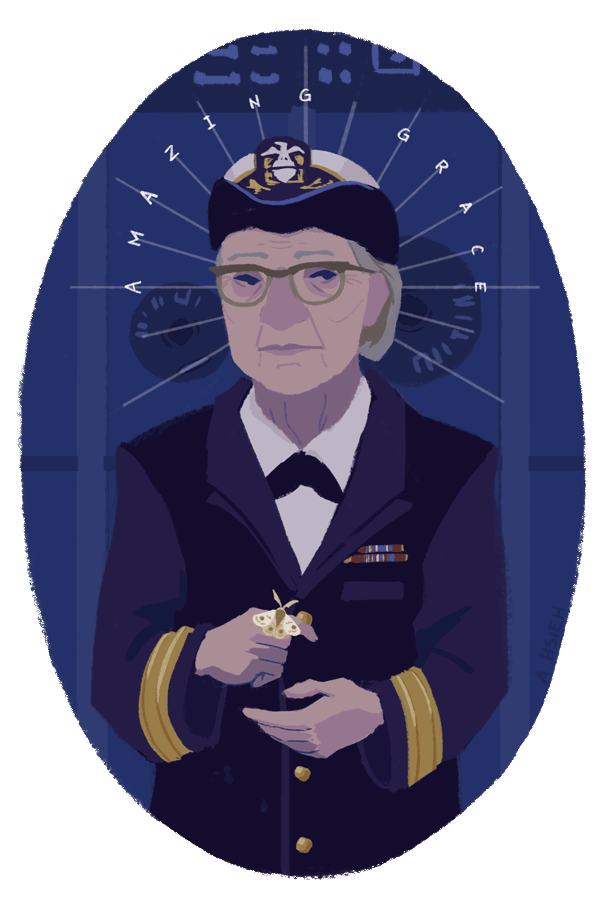

Grace Hopper
A criadora do COBOL, da máquina compiladora e do termo "bug".
.
Quem foi Grace Hopper
Grace Hopper nasceu em 9 de dezembro de 1906, em Nova York nos Estados Unidos, faleu em 1992. Foi uma cientista da computação americana e contra-almirante da Marinha, pioneira no campo da programação de computadores. Ela é creditada com a criação do primeiro compilador, que é um programa que traduz código de computador de uma linguagem para outra, possibilitando aos programadores escrever código em uma linguagem de nível superior que é mais fácil de ler e escrever do que a linguagem de máquina.
Hopper também esteve envolvida no desenvolvimento dos primeiros computadores, incluindo Harvard Mark I e UNIVAC I. Ela era conhecida por seu trabalho em linguagens de programação, como COBOL, e por defender o uso de linguagens de computador padronizadas. Hopper também foi pioneira para mulheres em tecnologia, quebrando barreiras em um campo dominado por homens. Ela foi premiada postumamente com a Medalha Presidencial da Liberdade em 2016 por suas contribuições à ciência e tecnologia da computação.

Grace decide ingressar no serviço militar, sendo logo de cara recusada, devido à sua idade e estatura (na época tinha 34 anos).
Contribuições
Veja a lista de suas principais contribuições:
▻Em 1949, Hopper foi contratada pela empresa Eckert Mauchly Computer Corporation para atuar como matemática sênior no desenvolvimento do UNIVAC I, o primeiro computador da história a ser vendido em larga escala no mercado.
▻Criou a primeira linguagem de programação de alto nível, chamada COBOL, que permitiu que os programadores escrevessem código em inglês, tornando mais fácil para os usuários finais entenderem.
▻Criou o primeiro compilador, um programa que traduz a linguagem de programação para a linguagem de máquina, tornando mais fácil para os programadores escreverem código.
▻Desenvolveu o conceito de depuração (debugging), ou seja, a identificação e correção de erros em um programa de computador.
▻Propôs o uso de sub-rotinas, também conhecidas como "rotinas de serviço", que permitem que um programa execute uma série de tarefas de forma eficiente.
▻Foi uma das primeiras defensoras da padronização de linguagens de programação e do uso de computadores em rede.
Em resumo, Grace Hopper foi uma pioneira da ciência da computação e suas contribuições revolucionaram a maneira como programamos e usamos computadores hoje em dia. Confira algumas fotos na galeria abaixo:


.
.
.
.
.
Legado
Quando Grace Hopper se aposentou da Marinha dos EUA em 1986, ela foi agraciada com a Medalha Presidencial da Liberdade, a mais alta honraria civil dos Estados Unidos, pelo presidente Ronald Reagan. Ela continuou a ser uma líder influente na área de ciência da computação e tecnologia até sua morte em 1992, e muitos prêmios e homenagens foram concedidos a ela durante esse período. Além disso, ela deixou um legado duradouro como pioneira em programação de computadores e defensora da educação em ciência da computação para todos.
Curiosidades
Grace Hopper é frequentemente creditada por popularizar o uso do termo "bug" (inseto, em português) para se referir a problemas em sistemas de computador. A história mais famosa é que em 1947, Hopper e sua equipe encontraram um inseto literal preso dentro do computador Harvard Mark II, que estava causando problemas no funcionamento do sistema. Eles removeram o inseto e o colocaram em um livro de registro, junto com a anotação "primeiro caso de bug encontrado". Embora a história seja amplamente divulgada, o uso do termo "bug" para se referir a problemas em sistemas elétricos e mecânicos já era comum antes de Hopper, e ela própria reconheceu isso em uma entrevista em 1984. No entanto, é inegável que Hopper popularizou o uso do termo no contexto da computação e contribuiu para torná-lo amplamente reconhecido.
Referências
"The Amazing Grace". In: Derivando a Matemática - Unicamp.
Grace Hopper. In: National Women's History Museum.
First Computer Bug, 1945. In: World's First Computer Bug.
Grace Hopper: quem foi a matemática que revolucionou a programação. In: Galileu História.